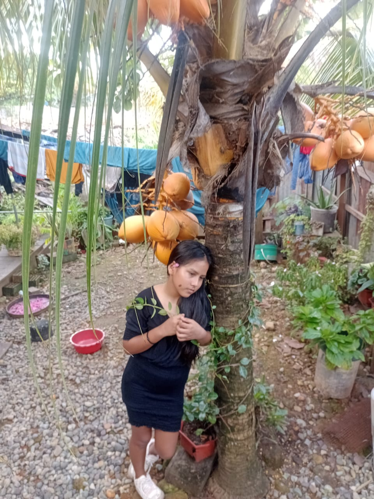

10 de Abril del 2025
AlegrÍa 😊
Hoy he sentido una felicidad inmensa, como si el sol hubiera decidido iluminar mi corazón.

Total de fotos subidas: 123
Emociones exploradas: 8
Último recuerdo visto: Amanecer Dorado
Una imagen de un dÍa inolvidable, llena de magia y emoción.



Conserva cada instante a flor de piel y revive tus emociones dÍa a dÍa.
AlegrÍa 😊
Hoy he sentido una felicidad inmensa, como si el sol hubiera decidido iluminar mi corazón.
Nostalgia 🕰️
El aroma de la lluvia y los recuerdos de antaño me llenan de melancolÍa y dulzura.

Una celebración llena de risas, sorpresas y abrazos.
Recordando juegos y aventuras que marcaron mi niñez.
Un momento muy aburrido.
12 recuerdos
8 recuerdos
Explora y revive cada lugar con un solo clic: tus historias y emociones aguardan en cada marcador.
.png)
Historia breve
Fecha
Emoción
Explora y comparte tus sentimientos a través de tarjetas vivas e interactivas.
AlegrÍa
Nostalgia
Amor
Orgullo
Tristeza
Asombro
Paz
Hoy sentà una felicidad inmensa.
Emoción predominante: Ninguna
DÍa más feliz: -
Mes más nostálgico: -
Porque lo vivido nunca muere; cada recuerdo es un altar de emociones donde el tiempo se detiene.
El instante que cambió mi vida.
El primer destello de un sueño.
10/04/2025
Una historia de luz y revolución interna que marcó un antes y un después.
08/04/2025
El inicio de un viaje emocional lleno de inocencia y esperanza.